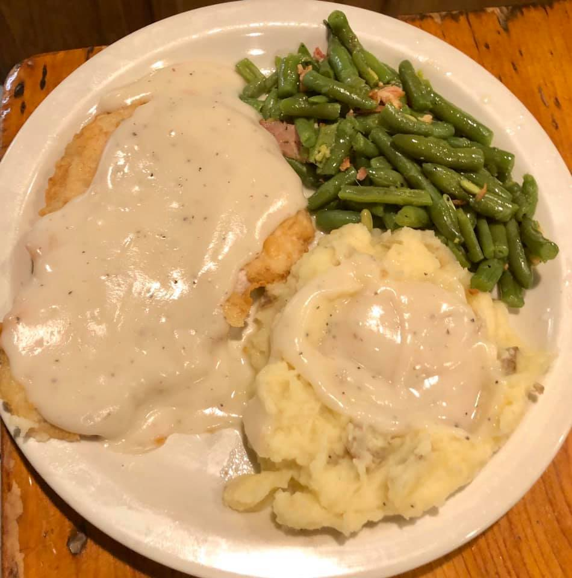
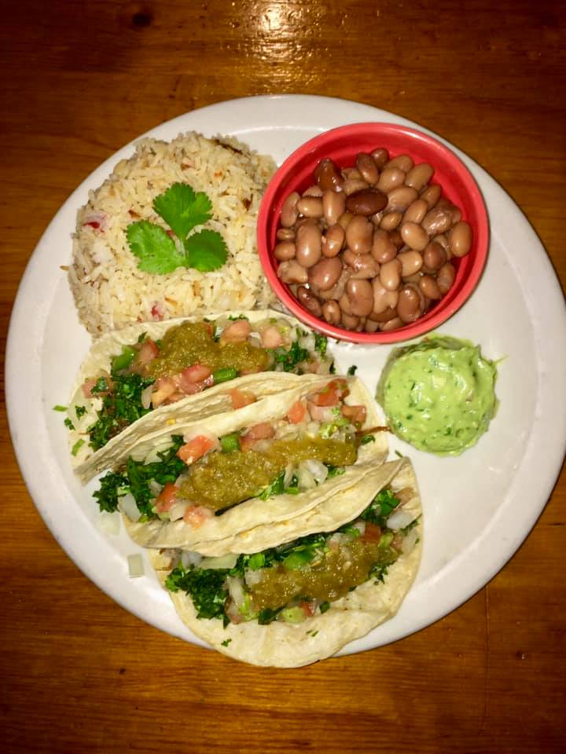
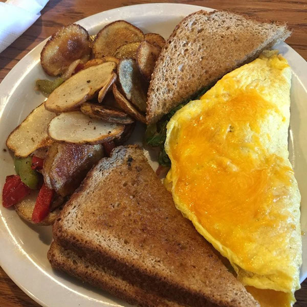
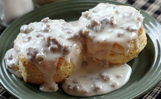
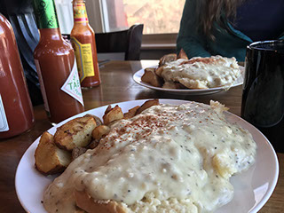

Roadside Café, Homemade Food
Dusty Boots Café is the on-site restaurant at Dusty Boots Motel, sitting along James Canyon Highway in Cloudcroft. This is not a polished concept restaurant. It is a genuinely local roadside café built around homemade country cooking, breakfast served every morning, and daily specials that rotate with the season.
The café is part of a family-run motel property with themed rooms and roadside nostalgia. The appeal here is personality and familiarity rather than polish — the kind of place where lodging and dining reinforce each other, and the dining room feels like an extension of the property’s character.
The official site states that more than 90% of menu selections are homemade from fresh ingredients. That claim, combined with the German Saturday dinner tradition, sets Dusty Boots apart from a standard highway stop.

Character Over Polish

Motel & Café
Dusty Boots is a combined motel-and-café property rather than a stand-alone restaurant. The dining room is tied to a motel people clearly remember — themed rooms, roadside nostalgia, and a family-run feel.
Homemade from Scratch
The official site claims more than 90% of menu selections are homemade from fresh ingredients. This is country cooking with daily specials, not a reheated highway-stop menu.
Evolving Identity
Local coverage in 2024 noted new signage for “Café & Tacos & Cantina,” reflecting a broader menu direction with carne asada tacos and beer. The business is actively evolving while keeping its independent identity.
Visit Dusty Boots
Everything you need to know before you go.
Location
1315 James Canyon Hwy, Cloudcroft, NM 88317. On the highway approach to the village — part of the Dusty Boots Motel property.
Hours
Summer hours: 7:00 AM – 9:00 PM daily. Breakfast served 7:00 AM – 12:00 PM. Off-season hours may differ — call ahead to confirm.
Contact
Phone: 575-682-7736
Email: dusty@dustybootsmotel.com
Web: thedustyboots.com
Good to Know
Hours posted as summer hours — off-season schedules should be verified directly. Casual atmosphere, family-run, best suited for breakfast, comfort food, or a relaxed roadside meal. Room service available for motel guests.
From the Kitchen



Country Cooking on James Canyon Highway
Dusty Boots Café is one of Cloudcroft’s more distinctive independent hospitality operations — where lodging and dining reinforce each other, and homemade food is the whole point.